El análisis sistemático de registros administrativos en salud pública permite explorar patrones de utilización de servicios y caracterizar poblaciones bajo cobertura estatal. En la Evaluación 2 del presente proyecto académico, se desarrolló un pipeline enfocado en la selección de datos, incorporación de información territorial externa proyectada por el INEI, análisis exploratorio descriptivo, extracción de reglas de asociación mediante el algoritmo Apriori y modelamiento de costos directos (VALOR_NETO) a través de regresión lineal múltiple y regularizada Ridge.
El propósito de esta Evaluación 3 radica en continuar dicho trabajo mediante la aplicación e interpretación de algoritmos de aprendizaje supervisado (clasificación) y no supervisado (agrupamiento o clustering) sobre el repositorio de afiliados con diagnóstico de diabetes del Seguro Integral de Salud (SIS) del Perú. El análisis aborda dos problemas técnicos concretos:
ATENCIONES_FRECUENTES_E3 = 1) a partir de atributos demográficos y antecedentes comórbidos codificados en la base.Conviene precisar que el conjunto de datos corresponde a un corte transversal administrativo (con fecha de corte reportada en la serie de 2024). Por tanto, los modelos evalúan asociaciones y capacidades discriminativas retrospectivas en el conjunto evaluado; no constituyen una predicción prospectiva validada de eventos clínicos futuros ni establecen un panel de seguimiento longitudinal anual.
El repositorio original corresponde al archivo de datos abiertos Afiliados activos en el Seguro Integral de Salud con diagnóstico de Diabetes Mellitus, provisto por la Plataforma Nacional de Datos Abiertos del Estado Peruano, con un volumen inicial de 1.735.940 registros.
Una revisión técnica entre ambas evaluaciones evidencia que la Evaluación 2 reportó 570.437 registros procesados, mientras que el pipeline actual de la Evaluación 3 opera con 582.823 registros validados. Esta diferencia responde estrictamente a la definición de duplicados implementada en el código fuente:
completo.py, la función drop_duplicates evaluó únicamente cinco campos: ['CODIGO_ANONIMIZADO', 'EDAD', 'DEPARTAMENTO', 'VALOR_NETO', 'DIAS_HOSP']. Al no incluir las variables de comorbilidad ni de sexo en la clave de verificación, se eliminaron 79.561 filas de un mismo paciente que correspondían a registros con diagnósticos o atributos distintos.eva3.py, la clave de deduplicación evalúa la totalidad de los 11 atributos analizados: ['CODIGO_ANONIMIZADO', 'EDAD', 'SEXO', 'DEPARTAMENTO', 'TIPO_DIABETES', 'CON_DX_OBESIDAD', 'CON_DX_HIPERTENSION', 'CON_DX_SALUDMENTAL', 'CANT_ATENCIONES', 'VALOR_NETO', 'DIAS_HOSP']. Esta definición más estricta asegura que solo se descarten filas perfectamente idénticas en todas sus dimensiones, conservando registros legítimos de pacientes en diferentes eventos de atención. De la muestra probabilística inicial de 650.000 observaciones (semilla 42), se eliminaron 67.175 duplicados exactos (remanente: 582.825) y posteriormente 2 registros con inconsistencia de edad biológica (<0 o >110 años), consolidando 582.823 registros validados.SIN_REGISTROEn la Evaluación 2, los valores vacíos en comorbilidades (CON_DX_OBESIDAD, CON_DX_HIPERTENSION, CON_DX_SALUDMENTAL) fueron recodificados como «NO» como un supuesto operativo simplificador. En la Evaluación 3, siguiendo una práctica de auditoría de datos más transparente (comparar_e2=False), estos registros faltantes se mantuvieron de forma explícita bajo la categoría SIN_REGISTRO. En bases de datos administrativas de facturación sanitaria, la ausencia de un código diagnóstico no demuestra ausencia clínica de la patología, sino únicamente la falta de registro del acto médico en la serie disponible.
Para viabilizar la computación rigurosa de matrices de distancia en K-NN y siluetas en agrupamiento, se definieron subconjuntos estructurados:
log1p en variables asimétricas de conteo y costo, calculando la silueta en una submuestra fijada de 1.800 casos.Los árboles de decisión particionan el espacio de atributos mediante divisiones sucesivas. El algoritmo CART (Classification and Regression Trees), formalizado por Breiman et al. (1984), implementa particiones binarias recursivas minimizando la Impureza de Gini en cada nodo descendiente:
donde representa la proporción de registros de la clase en el nodo , con clases. Como referencia comparativa basada en la ganancia de información, se evaluó adicionalmente un modelo con criterio de Entropía de Información:
El árbol con entropía sigue siendo una referencia basada en ganancia de información, no una implementación de C4.5. El repositorio implementa por separado C45Classifier en c45_arbol.py, con selección de atributos mediante razón de ganancia (gain ratio), umbrales numéricos, ramas categóricas y poda pesimista aproximada configurable. Se trata de una implementación académica de tipo C4.5 y no de una reproducción íntegra del programa original de Quinlan: no incluye conversión a reglas ni su tratamiento probabilístico completo de datos faltantes. Los resultados de esta sección fueron obtenidos con el CSV original y corresponden a metricas_clasificacion.csv y metadatos_ejecucion.json.
Para controlar la complejidad y prevenir el sobreajuste, se restringió la profundidad a max_depth=6 y se estableció un tamaño mínimo de hoja de min_samples_leaf=100. Para CART y el árbol de entropía, frente al desbalance entre clases (84% negativos vs 16% positivos), se aplicó el esquema class_weight='balanced', que asigna pesos inversamente proporcionales a las frecuencias muestrales:
La figura exhibe la arquitectura de los tres primeros niveles jerárquicos del modelo CART entrenado (representación parcial del árbol completo de profundidad 6):
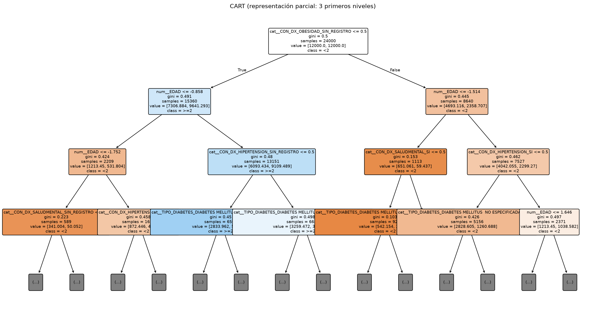
En el nodo raíz y las divisiones iniciales, las particiones evalúan la presencia o ausencia de registros explícitos de comorbilidad y rangos etarios. La ausencia de registro diagnóstico desvía las ramas hacia la clasificación de baja utilización observada, mientras que los registros con comorbilidades y mayor edad se orientan hacia la clase de atenciones frecuentes.
La importancia relativa de las variables se calculó mediante la reducción media de impureza Gini (Mean Decrease in Impurity):
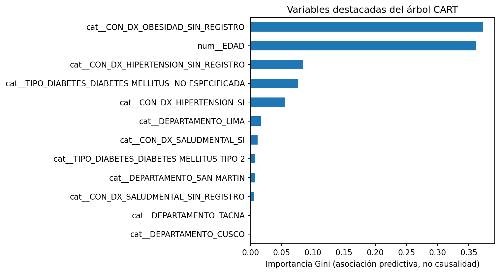
SIN_REGISTRO y Causalidad:CON_DX_OBESIDAD_SIN_REGISTRO y CON_DX_HIPERTENSION_SIN_REGISTRO presentan una elevada importancia predictiva. Esto no demuestra una relación causal protectora. Corresponde a un sesgo de registro administrativo: los afiliados que interactúan poco con el sistema asistencial acumulan menos actos médicos donde se codifiquen diagnósticos comórbidos en la base de datos de facturación. En consecuencia, la ausencia de registro opera como un indicador indirecto de baja frecuentación del sistema, no como una causa clínica.
Sobre la partición de prueba independiente de 6.000 observaciones (5.041 negativos y 959 positivos), CART reportó:
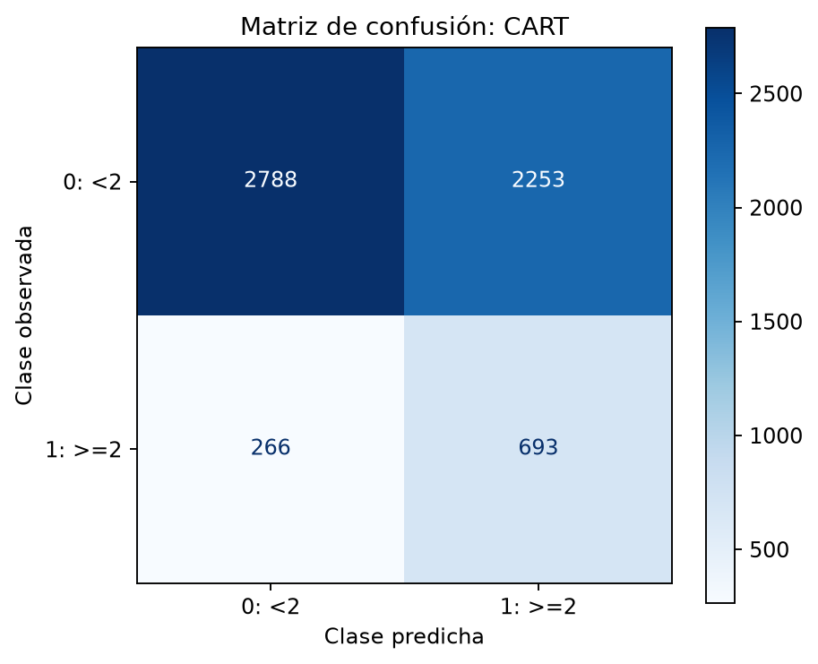
El desglose de clasificaciones muestra:
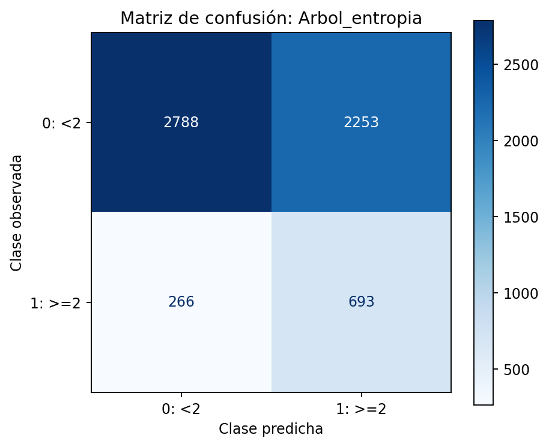
En validación interna de 4.800 registros, sin utilizar la partición de prueba, se compararon poda activada/desactivada y umbrales de 0,05 a 0,50. La configuración seleccionada fue sin poda y con umbral de decisión 0,20, con F1 positivo de 0,3361 y ROC-AUC de 0,6573 en validación. El árbol de esa validación tenía 53 nodos. Al reentrenar el modelo con los 24.000 registros completos de entrenamiento, se obtuvieron 63 nodos con raíz en EDAD.
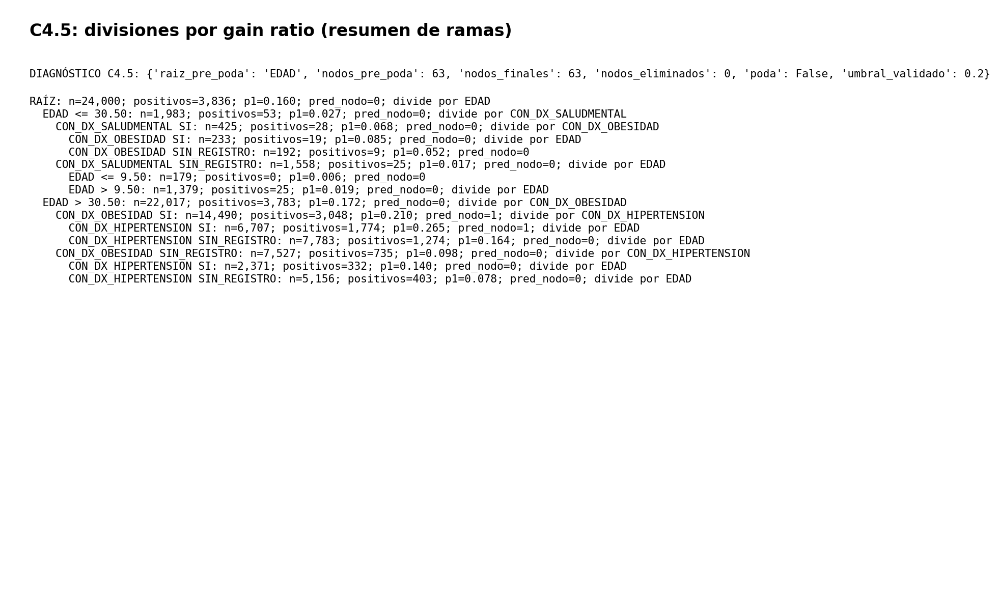
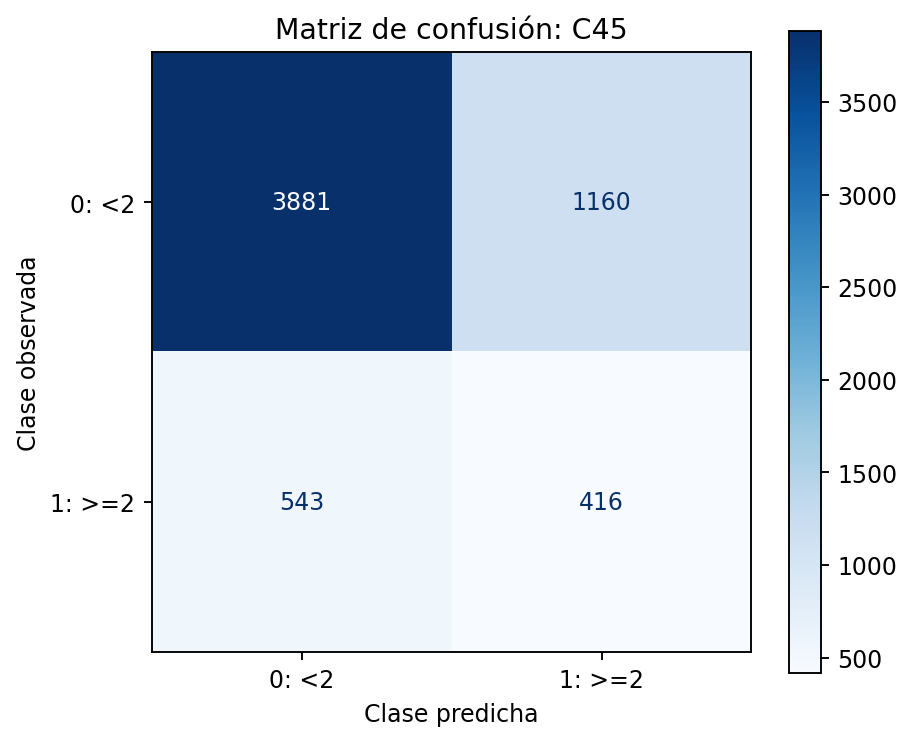
Sobre prueba independiente, C4.5 obtuvo Accuracy = 0,7162; Balanced Accuracy = 0,6018; Precision = 0,2640; Recall = 0,4338; F1 = 0,3282; ROC-AUC = 0,6628. Identificó 416 de los 959 positivos. CART tiene mayor sensibilidad (0,7226) y F1 (0,3549), mientras que C4.5 logra mayor exactitud global (0,7162 frente a 0,5802) y precisión de la clase 1 (0,2640 frente a 0,2352). Esto refleja compromisos diferentes entre falsos positivos y falsos negativos, no superioridad universal de un método.
La selección del umbral y la poda quedó registrada en diagnostico_c45.json, la estructura final en estado_c45.json y las ramas en arbol_C45_resumen.txt. Las siete pruebas automatizadas sobre datos sintéticos y la ejecución final sobre SIS respaldan el funcionamiento técnico observado, pero no constituyen validación clínica.
Las métricas obtenidas sitúan el Accuracy en 58,02%, la Balanced Accuracy en 63,78%, el Recall en 72,26%, la Precisión en 23,52%, el F1-score en 0,3549 y el ROC-AUC en 0,6794. La variante con criterio de entropía reproduce idénticos guarismos.
El algoritmo K-Nearest Neighbors (K-NN) clasifica un registro asignándole la clase predominante entre sus vecinos más próximos en el espacio multidimensional según la distancia euclidiana estandarizada:
El pipeline utilizó ponderación por el inverso de la distancia (weights='distance'), donde el peso de voto asignado al vecino es .
Dado que K-NN depende de distancias geométricas, las variables numéricas fueron estandarizadas con StandardScaler y las categóricas codificadas con OneHotEncoder dentro del pipeline. La selección del número de vecinos se evaluó para exclusivamente en la partición de validación interna de 4.800 registros:
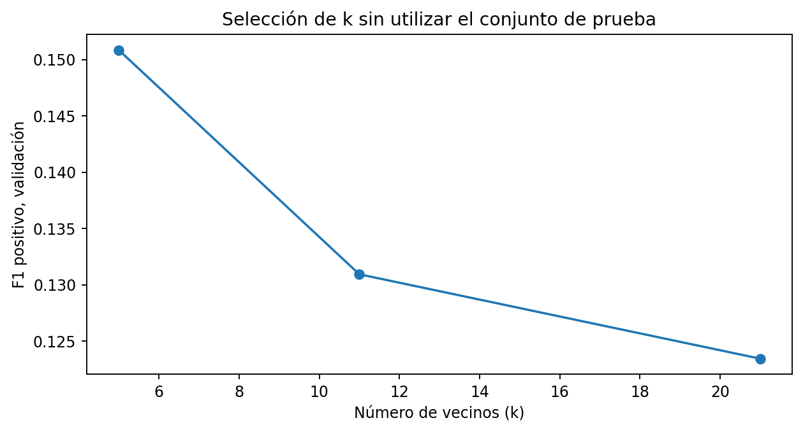
Evaluado con sobre los 6.000 registros de prueba independiente, K-NN arrojó la siguiente matriz:
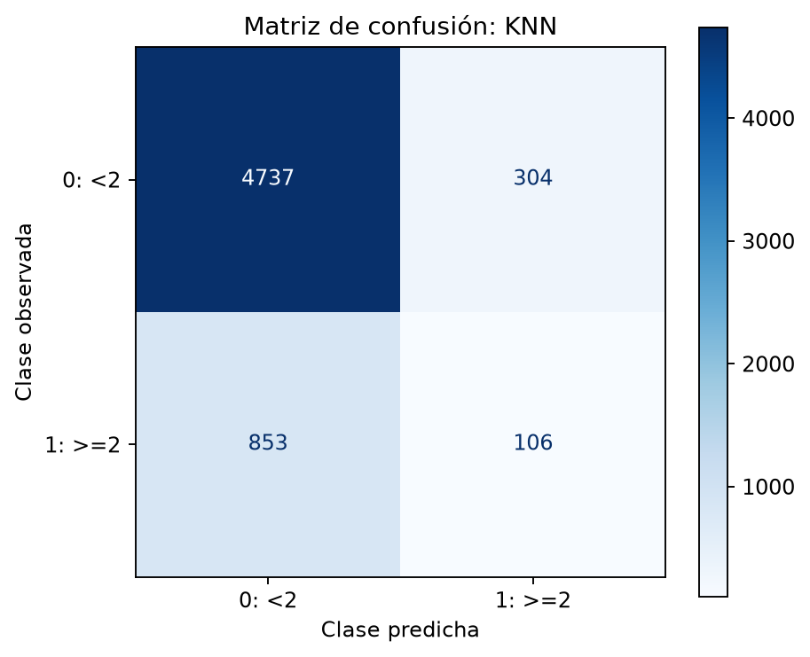
El desglose categórico revela:
La Regresión Logística modela la probabilidad condicionada de que un registro pertenezca a la clase de interés () mediante la transformación sigmoide:
El logaritmo de los momios (log-odds o logit) se expresa linealmente como . El ajuste se realizó mediante el optimizador lbfgs con regularización L2, balanceo de pesos de clase (class_weight='balanced') y 2.000 iteraciones máximas.
Bajo el umbral de decisión estándar (), la evaluación sobre los 6.000 registros de prueba arrojó:
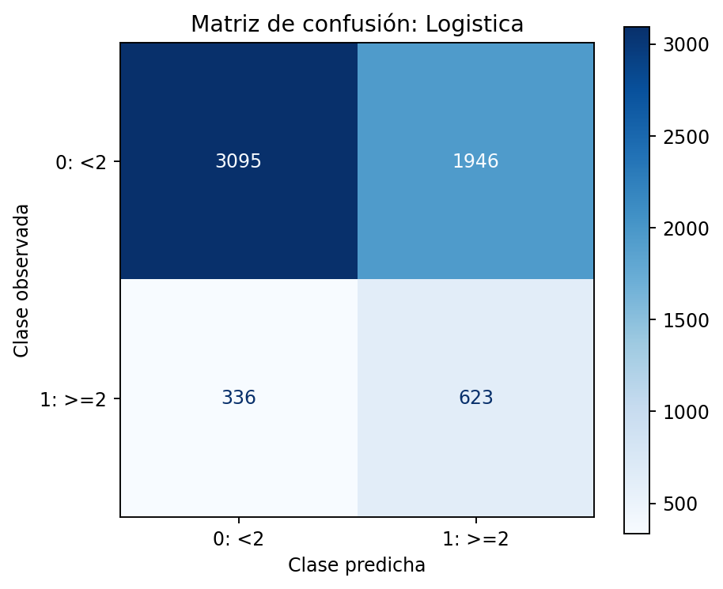
El desglose corresponde a:
El modelo alcanza un Accuracy de 61,97%, una Balanced Accuracy de 63,18%, un Recall de 64,96%, una Precisión de 24,25%, un F1-score de 0,3532 y un ROC-AUC de 0,6726.
La figura a continuación ilustra los coeficientes estandarizados con mayor valor absoluto estimados por el modelo:
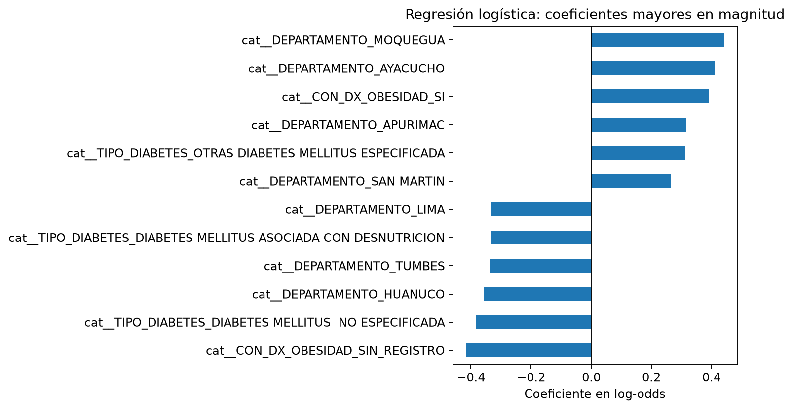
| Variable Predictora | Coeficiente () | Odds Ratio () | Efecto Condicional en Momios (Odds) |
|---|---|---|---|
| DEPARTAMENTO_MOQUEGUA | +0,4418 | 1,555 | Multiplica los momios condicionales por 1,555 frente al intercepto regularizado. |
| DEPARTAMENTO_AYACUCHO | +0,4121 | 1,510 | Multiplica los momios condicionales por 1,510 manteniendo los demás factores fijos. |
| CON_DX_OBESIDAD_SI | +0,3918 | 1,480 | Multiplica los momios condicionales por 1,480 ante la presencia del diagnóstico. |
| DEPARTAMENTO_APURIMAC | +0,3154 | 1,371 | Multiplica los momios condicionales por 1,371. |
| TIPO_DIABETES_OTRAS ESPECIFICADAS | +0,3115 | 1,366 | Multiplica los momios condicionales por 1,366. |
| CON_DX_HIPERTENSION_SI | +0,2624 | 1,300 | Multiplica los momios condicionales por 1,300 ante la presencia del diagnóstico. |
| EDAD (Estandarizada) | +0,2235 | 1,250 | Multiplica los momios por 1,250 por cada desviación estándar de incremento etario. |
| CON_DX_HIPERTENSION_SIN_REGISTRO | -0,2874 | 0,750 | Multiplica los momios condicionales por 0,750 (reducción en momios). |
| DEPARTAMENTO_LIMA | -0,3329 | 0,717 | Multiplica los momios condicionales por 0,717. |
| DEPARTAMENTO_HUANUCO | -0,3576 | 0,699 | Multiplica los momios condicionales por 0,699. |
| CON_DX_OBESIDAD_SIN_REGISTRO | -0,4168 | 0,659 | Multiplica los momios condicionales por 0,659 (reducción en momios). |
OneHotEncoder(handle_unknown='ignore') sin omitir una categoría de referencia (sin drop_first=True). La estimación evita singularidad gracias a la penalización Ridge de regularización L2 del optimizador lbfgs, que contrae los coeficientes conjuntamente hacia cero. Por consiguiente, cada coeficiente no representa una comparación directa contra una categoría basal omitida ni contra la media muestral exacta, sino la contribución condicional aditiva al logit global dentro del estimador regularizado.La tabla a continuación resume el rendimiento de los cinco esquemas evaluados en la partición de prueba independiente (6.000 registros):
| Modelo de Clasificación | Accuracy Global | Balanced Accuracy | Precision (Clase 1) | Recall / Sensibilidad | F1-Score (Clase 1) | ROC-AUC |
|---|---|---|---|---|---|---|
| Referencia (Dummy Most Frequent) | 0,8402 | 0,5000 | 0,0000 | 0,0000 | 0,0000 | 0,5000 |
| CART (Árbol de Decisión Gini) | 0,5802 | 0,6378 | 0,2352 | 0,7226 | 0,3549 | 0,6794 |
| Árbol con Entropía (Referencia Comparativa) | 0,5802 | 0,6378 | 0,2352 | 0,7226 | 0,3549 | 0,6794 |
| K-Nearest Neighbors (k=5) | 0,8072 | 0,5251 | 0,2585 | 0,1105 | 0,1549 | 0,5799 |
| Regresión Logística | 0,6197 | 0,6318 | 0,2425 | 0,6496 | 0,3532 | 0,6726 |
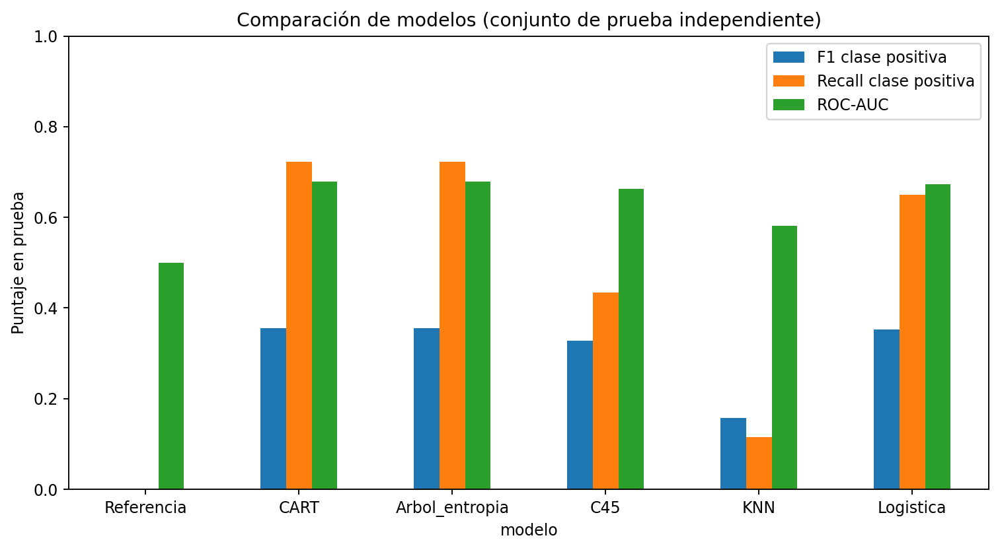
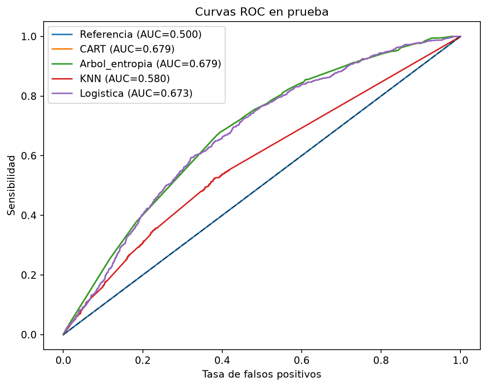
Para constatar la naturaleza del desbalance de clases, se incluye la matriz del clasificador Dummy que asigna siempre la clase mayoritaria:
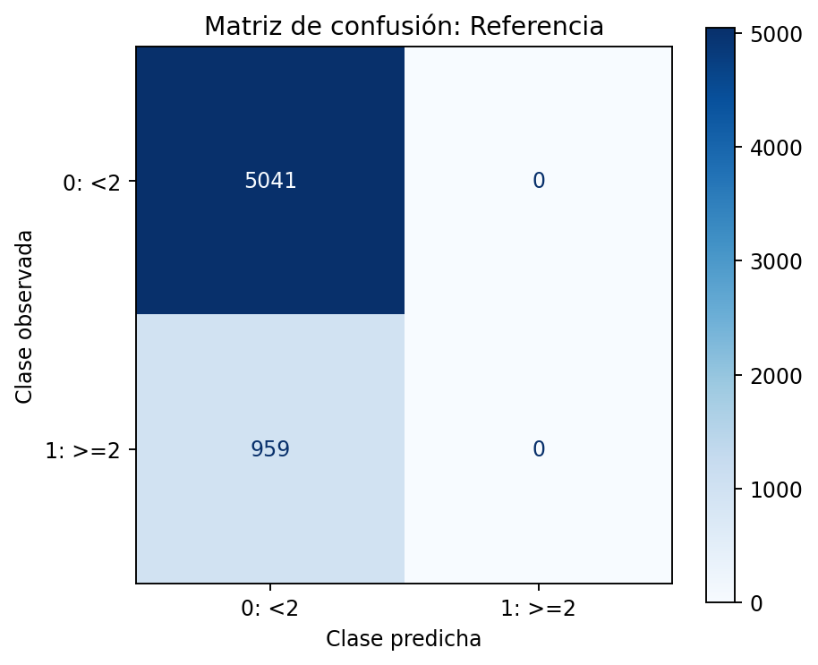
En el contexto de la gestión de bases administrativas, la elección del modelo implica balancear costos operativos de clasificación errónea:
Bajo una ponderación que priorice la identificación de registros con atenciones observadas recurrentes, CART alcanza la mayor sensibilidad (Recall = 72,26%), detectando 693 de los 959 casos positivos, aunque a expensas de generar 2.253 falsos positivos (clasificando como positivos al 49,1% de los registros de prueba). La Regresión Logística ofrece una alternativa intermedia (Recall = 64,96% con menor tasa de falsos positivos, FP = 1.946). K-NN muestra una sensibilidad marcadamente insuficiente (11,05%) para este objetivo.
El algoritmo K-Means particiona un conjunto de observaciones en grupos minimizando la inercia intra-cluster o suma de cuadrados dentro del grupo (WCSS):
donde es el centroide del grupo .
La segmentación se aplicó sobre 20.000 observaciones seleccionadas aleatoriamente, incorporando variables numéricas (EDAD, CANT_ATENCIONES, DIAS_HOSP, VALOR_NETO) y categóricas (SEXO, TIPO_DIABETES, comorbilidades). Las variables operativas de conteo y gasto fueron transformadas mediante (log1p) para mitigar colas pesadas, seguido de estandarización por StandardScaler y OneHotEncoder.
Se evaluó la estructura para mediante el método del codo de inercia y el coeficiente de silueta:
donde es la distancia media intra-cluster y la distancia media mínima al cluster más próximo (evaluado sobre una submuestra fijada de 1.800 casos).
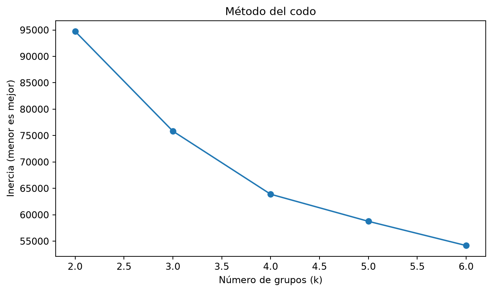
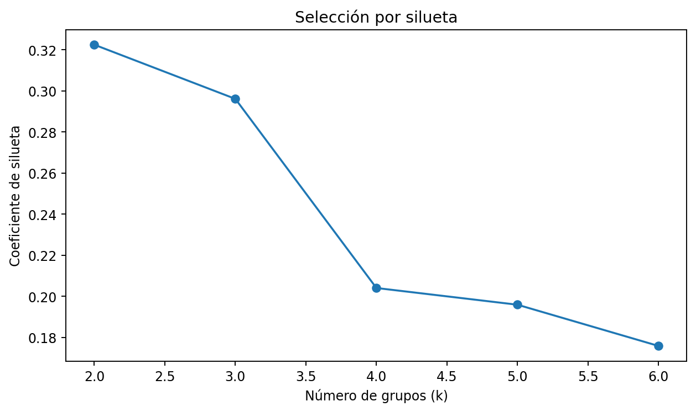
| Número de Grupos () | Inercia (WCSS) | Silueta (Submuestra) | Diagnóstico Numérico |
|---|---|---|---|
| k = 2 | 94.747,50 | 0,3225 | Configuración seleccionada: mayor separación geométrica media. |
| k = 3 | 75.844,67 | 0,2961 | Descenso en silueta promedio. |
| k = 4 | 63.892,85 | 0,2040 | Menor cohesión y separación. |
| k = 5 | 58.759,58 | 0,1959 | Fragmentación de grupos. |
| k = 6 | 54.169,53 | 0,1758 | Silueta deficiente. |
Alcance del resultado: una silueta de 0,3225 indica una separación geométrica moderada y cierto solapamiento entre grupos. No demuestra perfiles clínicos independientes ni valida por sí sola su utilidad operativa.
Para facilitar la comprensión descriptiva, las medias se reconvirtieron a las escalas originales (aplicando expm1):
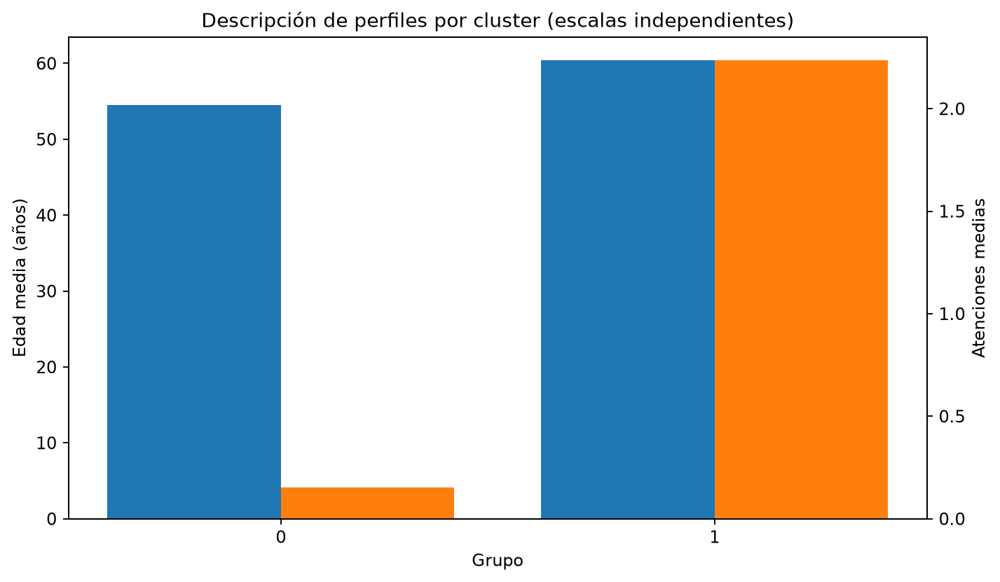
| Grupo | Registros () | Proporción | Edad Media | Atenciones Medias | Gasto Neto Medio | Días Hosp. Medio | Descripción Operativa |
|---|---|---|---|---|---|---|---|
| Cluster 0 | 15.497 | 77,48% | 54,49 años | 0,15 atenciones | 0,06 soles | 0,00026 días | Baja utilización registrada: Registros con actividad asistencial y gasto prácticamente nulos en el periodo. |
| Cluster 1 | 4.503 | 22,52% | 60,45 años | 2,24 atenciones | 278,55 soles | 0,8925 días | Mayor demanda asistencial registrada: Pacientes con mayor edad promedio, atenciones recurrentes y registros de internación. |
Para examinar la estructura espacial de los clusters identificados, el pipeline generó dos representaciones bidimensionales complementarias.
El Análisis de Componentes Principales (PCA) calcula combinaciones lineales ortogonales de las variables transformadas, proyectando los datos en las direcciones de máxima variabilidad muestral:
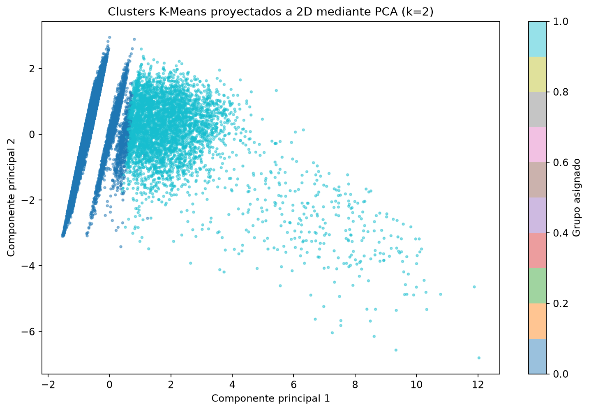
La segunda visualización mapea los registros sobre dos atributos directos: la edad y el número de atenciones:
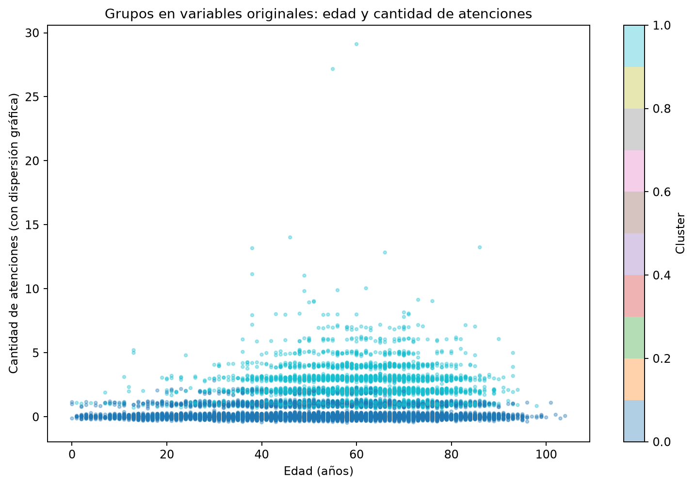
CANT_ATENCIONES toma valores enteros discretos (0, 1, 2, ...), graficar los puntos directos provocaría un severo sobretrazado (overplotting). El código aplicó una perturbación gaussiana con media 0 y desviación estándar de 0,12 (np.random.normal(scale=0.12)). Esta dispersión estocástica no está estrictamente acotada a ±0,12 (aproximadamente el 68% de los desplazamientos queda en ±0,12 y el 95% en ±0,24), permitiendo apreciar la densidad relativa en torno a cada nivel de atención.El contraste entre los enfoques supervisado y no supervisado ofrece una lectura complementaria del conjunto de datos analizado:
Ambos procedimientos convergen en la estructura general observada:
Mientras la clasificación supervisada evalúa reglas de decisión binarias para separar una etiqueta predeterminada, el agrupamiento no supervisado explora particiones geométricas basadas en distancias multivariadas. Ambos métodos coinciden en caracterizar un segmento de aproximadamente 16% a 23% de registros que concentra la mayor demanda en esta muestra.
Para una adecuada interpretación académica, se deben considerar las siguientes restricciones:
SIN_REGISTRO refleja prácticas de codificación en el sistema, lo que limita la extrapolación directa de estos modelos a otros entornos asistenciales sin previa calibración.El desarrollo de la Evaluación 3 permitió contrastar diversas técnicas de minería de datos sobre un volumen de 582.823 registros validados:
A partir de los hallazgos técnicos se formulan las siguientes consideraciones:
eva3.py utilizando las dependencias del proyecto (scikit-learn 1.6.1, pandas 2.3.3, numpy 2.0.2, matplotlib 3.9.4). Evidencias visuales y numéricas extraídas del directorio resultados_e3_corregidos/ (metadatos de ejecución JSON y tabla de resumen descriptivo).